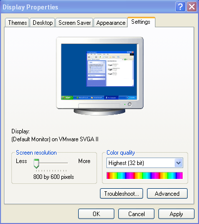
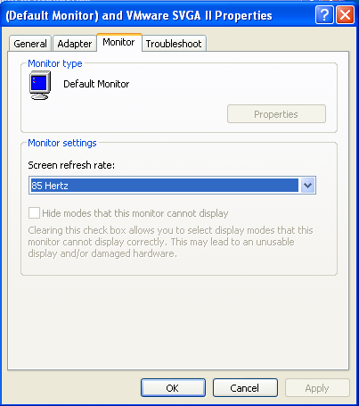

System settings
One monitor work
For optimal program working it's necessary to set resolution 800*600 pixels. For this resolution one should choose maximum available refresh rate.
Follow this step to set this parameters in Microsoft Windows XP:
- Click right mouse button on desktop and choose "Properties".
- In window wchich appear choose last tab: "Settings".
- Set resolution 800*600 as shown on picture 1.
- Approve changes using "Apply" button.
- Click "Advanced" button.
- In window which appear choose tab "Monitor".
- From drop-down menu choose maximal available refresh rate as shown on picture 2.
- Approve changes using "OK" button in following windows.
Dual monitor work
In dual monitor work mode it's necessary to set resolution 800*600 on primary screen. For this resolution one should choose maximum available refresh rate on primary screen. Resolution and refresh rate on second screen doesn't matter.
Follow this step to set this parameters in Microsoft Windows XP:
- Connect second monitor to computer.
- Click right mouse button on desktop and choose "Properties".
- In window wchich appear choose last tab: "Settings".
- Click right mouse button on rectangle symbolized second monitor and choose option "Connected" as shown on picture 2.
- If second monitor will display tests for patient, mark it as primay. Click right mouse button on rectangle symbolized second monitor and choose option "Primary".
- Approve changes using "Apply" button.
- Click right mouse button on rectangle symbolized primary monitor and choose option "Properties"
- In window which appear choose tab "Monitor".
- From drop-down menu choose maximal available refresh rate as shown on picture 2.
- Approve changes using "OK" button in following windows.

Picture 1. Setting resolution in Microsoft Windows XP

Picture 2. Setting refresh rate in Microsoft Windows XP

Picture 3. Connecting second monitor in Microsoft Windows XP